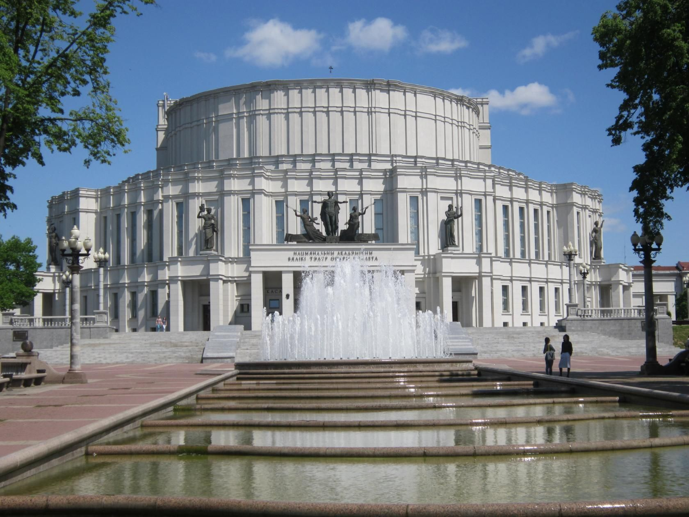

Большой театр Беларуси (белор. Вялікі тэатр Беларусi) — единственный оперный театр и крупнейший театр в Белоруссии, расположенный в Минске. Здание театра является образцом советского довоенного конструктивизма (авторы — И. Г. Лангбард и Г. Лавров), имеет статус памятника архитектуры национального значения. В театре существуют оперная и балетная труппы, симфонический оркестр, хор, Детский музыкальный театр-студия, творческий коллектив «Белорусская Капелла».